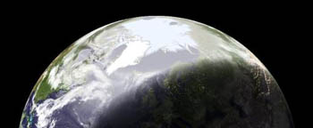

Earthview
maandag 21 juli 2003 | Zomaar
Er zijn soms van die momenten waarop ik het erg jammer vind dat ik geen kaas gegeten heb van alles wat nog maar in de verste verte naar programmeren ruikt. Anders had ik zeker al eens zitten spelen met de cocktail programmaatjes en scripts die samen het Earthview-projectje uitmaken. Met Earthview kan je prachtige life satellietbeelden renderen van jouw geliefkoosde deeltje van de wereldbol op basis van de talloze satellietbeelden die overal ter beschikking staan op het net. Het unieke aan Earthview is dat het al die beelden (temperatuur, wolken, ozon, stromingen, …) samenvoegt tot één waarheidsgetrouw beeld.
